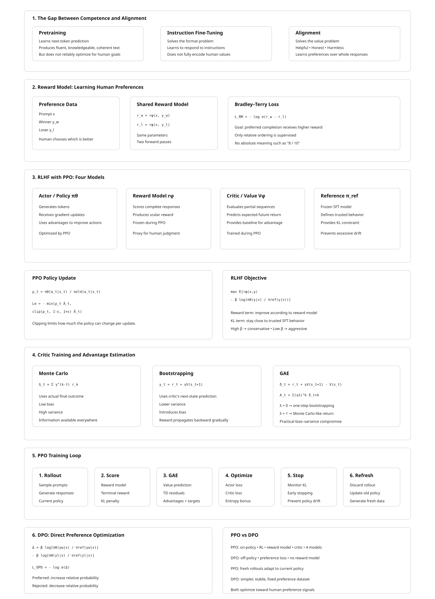

28 Alignment and Preference Optimization
The canonical question for this chapter: How do you train a model to produce outputs that humans prefer, and why is “what humans prefer” a harder optimization target than it appears?
28.1 The Gap Between Competence and Alignment
A model trained by next-token prediction on a large corpus becomes competent: it can produce fluent, factually dense, structurally coherent text across a vast range of topics and styles. What it cannot reliably do is be helpful. The pretraining corpus rewards predicting what comes next in naturally occurring text, which includes arguments, fiction, misinformation, toxic content, and instruction-free prose. A base model asked to help with a task may instead complete the task description, argue the other side, produce a plausible continuation of the user’s query rather than an answer to it, or generate content that matches the surface statistics of the training corpus without regard for whether it is true or safe.
Instruction fine-tuning addresses the format problem: the model learns to respond to requests rather than complete them. Alignment addresses the value problem: the model learns to respond in ways that are helpful, honest, and safe, properties that are not captured by instruction-following loss and cannot be directly specified as token-level supervision. There is no single correct next token for “explain the causes of the French Revolution in a way that is honest about historical uncertainty” the way there is for “complete this sentence.” Quality here is a property of the whole response, judged against criteria (helpfulness, honesty, harmlessness) that only exist in the aggregate.
This distinction matters because a model can follow instructions precisely while producing outputs that are harmful, sycophantic, deceptive, or unhelpful in ways that satisfy the letter of the instruction but violate its spirit. Alignment methods attempt to train models to pursue the goals behind user requests, not just the literal content of the requests, a task that requires learning from human preferences rather than from correct-answer labels.
28.2 Reward Models
The prerequisite for most alignment methods is a reward model: a function that takes a prompt and a completion and returns a scalar score representing the quality of that completion as a human would judge it. The reward model is a proxy for human judgment, trained on human preferences, used in place of live human evaluation at training time. Every method introduced later in this chapter is, at its core, a different answer to the question “given that we have some way of scoring completions, how do we use that score to update the policy?” so it is worth understanding carefully where that score comes from before looking at what is done with it.
28.2.1 Collecting Preference Data
Reward model training requires human preference judgments. The standard data collection procedure is:
- Sample a set of prompts from a diverse distribution (user queries, instruction data, red-team prompts).
- For each prompt, generate two or more completions from the model being aligned (or from multiple models at different training stages).
- Present each (prompt, completion A, completion B) triple to a human annotator and ask: which completion is better, and why?
- Collect pairwise preferences across thousands to millions of such triples.
The annotation task is comparative rather than absolute. Annotators are not asked to rate completions on a 1–10 scale, a task with poor inter-rater reliability, because different annotators calibrate scales differently: one annotator’s “7” is another’s “5” for the same response. They are instead asked which of two completions is better, a judgment that requires only a relative ordering and turns out to be substantially more reliable in practice. This is the same reason chess ratings (Elo) and sports rankings are built from pairwise outcomes rather than judges scoring players on an absolute scale: comparison is a cognitively easier and more consistent task than calibrated absolute measurement. The InstructGPT paper [1] reported inter-annotator agreement of approximately 73% for pairwise preferences, compared to much lower agreement for absolute ratings.
Annotation guidelines define what “better” means: more helpful, more accurate, more honest, less harmful, better formatted, more concise. Different guidelines produce different reward models with different implicit values, a reward model trained under guidelines that weight “thoroughness” heavily will systematically reward longer responses one trained under guidelines that weight “directness” will not. The choice of annotation guidelines is one of the most consequential yet least discussed decisions in alignment, because it is never visible in the resulting model weights; it is only visible in the model’s behavior, after the fact.
28.2.2 Training the Reward Model
Given a dataset of pairwise preferences \(\{(x, y_w, y_l)\}\), where \(x\) is a prompt, \(y_w\) is a preferred completion (winner), and \(y_l\) is a dispreferred completion (loser), the reward model is trained to assign a higher scalar reward to the preferred completion. For each preference pair, the same reward model is evaluated on the prompt with the winner and on the prompt with the loser, producing two scores:
\[ r_w = r_\phi(x,y_w), \qquad r_l = r_\phi(x,y_l). \]
The two scores are then compared, and the model is trained so that \(r_w > r_l\).
The standard training objective is the Bradley-Terry pairwise ranking loss:
\[ \mathcal{L}_{\text{RM}} = -\mathbb{E}_{(x,y_w,y_l)} \left[ \log \sigma \left( r_\phi(x,y_w) - r_\phi(x,y_l) \right) \right], \tag{28.1}\]
where \(r_\phi(x,y)\) is the reward model’s scalar output for prompt \(x\) and completion \(y\), and \(\sigma\) is the sigmoid function. The Bradley-Terry model is a standard statistical model of pairwise comparison outcomes (originally developed for ranking competitors from win/loss records); applied here, \(\sigma(r_w - r_l)\) is interpreted as the model’s estimated probability that the preferred completion is better than the rejected one. A larger positive difference produces a smaller loss, while assigning a higher score to the rejected completion produces a larger loss. Note what this loss does not require: it never asks the reward model to output a score with any particular absolute meaning (“8 out of 10”). Only the relative ordering within each pair is supervised, which is consistent with how the preference data was collected in the first place.
Importantly, the winner and loser are evaluated using the same reward model parameters, this is a Siamese-network-style training setup. The model is run once for each response, the resulting scores are compared to compute a single loss, and backpropagation updates the shared model parameters so that preferred responses receive higher rewards in future comparisons.
Architecturally, the reward model is typically initialized from the instruction-tuned model being aligned, with the final token’s hidden state projected to a scalar by a linear reward head (replacing the language modeling head that projects to the vocabulary). The final-token hidden state is used because, in a causal decoder, it is the only position that has attended to the entire prompt and completion, it is the natural summary representation of “everything that happened in this exchange.” Initializing from the instruction-tuned model, rather than the base model or a random initialization, provides a model that already understands language, instructions, and the general structure of useful responses, allowing preference training to focus on learning human preferences rather than learning language understanding from scratch.
28.2.3 Reward Model Quality and the Overoptimization Problem
A reward model is an imperfect proxy for human judgment. It was trained on a finite set of human preferences and will fail to generalize perfectly to the full distribution of possible completions. When a policy is optimized against this proxy, it will eventually find completions that score highly on the reward model while no longer scoring highly with actual humans, a phenomenon called reward hacking or reward overoptimization.
Gao et al. (2023) [2] quantified this directly: as the policy is optimized further against a fixed reward model (measured by KL divergence from the initial policy), gold-standard human preference scores increase initially, peak, and then decline. The peak occurs at a moderate optimization strength; beyond this point, the policy has learned to exploit the reward model’s flaws rather than genuinely improve. The distance to the peak depends on the size of the reward model relative to the policy, larger reward models generalize better and have a later overoptimization peak.
28.3 RLHF: Reinforcement Learning from Human Feedback
RLHF ([1], [3], [4]) is the foundational alignment technique, and the one most closely associated with the deployment of ChatGPT and its contemporaries. It combines reward model training with reinforcement learning to optimize the policy toward human preferences.
28.3.1 The Three-Stage Pipeline
Stage 1: Supervised Fine-Tuning (SFT). Fine-tune the base model on a high-quality set of instruction-response pairs to produce a well-behaved starting policy. This is the instruction fine-tuning procedure from Chapter 27. The SFT model is the policy that will be further aligned; it is also the reference model used for the KL penalty in Stage 3.
Stage 2: Reward Model Training. Collect human preference data on completions from the SFT model and train a reward model as described above. The reward model is trained separately from the policy and held fixed during Stage 3.
Stage 3: RL Optimization. Optimize the policy to maximize the reward model’s scores while staying close to the SFT policy. The optimization objective is:
\[ \max_{\pi_\theta} \mathbb{E}_{x \sim \mathcal{D}, y \sim \pi_\theta(y|x)} \left[ r_\phi(x, y) - \beta \log \frac{\pi_\theta(y|x)}{\pi_{\text{ref}}(y|x)} \right] \]
The first term is the reward signal: generate completions that the reward model scores highly. The second term is a KL divergence penalty between the current policy \(\pi_\theta\) and the reference policy \(\pi_{\text{ref}}\) (the SFT model): stay close to the behavior that was already good. Intuitively, the reward term pulls the policy toward whatever the reward model likes, and the KL term is a leash that limits how far it is allowed to wander from a policy we already trust to produce coherent, on-distribution language.
\(\beta\) controls the tradeoff. A high \(\beta\) means the policy cannot deviate much from the SFT model, limiting reward exploitation but also limiting alignment improvement. A low \(\beta\) means the policy can move aggressively toward the reward model’s preferences, risking overoptimization. Typical values are \(\beta = 0.1\) to \(0.5\).
28.3.2 PPO: The RL Algorithm
The RL stage in RLHF is commonly optimized using Proximal Policy Optimization (PPO) [5]. PPO is an on-policy actor-critic algorithm that improves the language model using responses generated by the current policy. It consists of four main components: the actor (policy), the critic (value model), the reward model, and a reference model.
Actor (policy): The language model being optimized. Given a prompt and the tokens generated so far, it produces a probability distribution over the next token. PPO updates this model to increase the probability of actions that lead to better-than-expected outcomes.
Reward model: Evaluates the complete generated response and produces a scalar reward representing its quality. In standard RLHF, this reward is typically provided at the end of the generated sequence.
Critic (value model): Estimates the expected future reward from each intermediate state, where a state consists of the prompt and the tokens generated so far. The critic is trained to predict the return obtained from the rollout. Its predictions are used to compute the advantage, which measures whether the observed outcome was better or worse than expected: \[ \hat{A}_t \approx \text{actual return} - V(s_t). \] Thus, the critic provides a baseline that reduces the variance of the policy-gradient estimate and helps assign credit to earlier token decisions.
Reference model: A frozen copy of the SFT model. It is used to prevent the policy from drifting too far from the behavior learned during supervised fine-tuning. This is typically enforced through a KL-divergence penalty between the policy and reference model.
PPO then updates the actor using the estimated advantages while limiting how much the policy can change in a single update. This is achieved through the clipped objective:
\[ \mathcal{L}_{\mathrm{PPO}} = \mathbb{E}_t \left[ \min \left( \rho_t \hat{A}_t,, \operatorname{clip}(\rho_t,1-\epsilon,1+\epsilon)\hat{A}_t \right) \right], \]
where
\[ \rho_t = \frac{\pi_\theta(a_t|s_t)} {\pi_{\mathrm{old}}(a_t|s_t)} \]
is the ratio between the probability assigned to the selected token by the updated policy and the old policy that generated the rollout. The clipping prevents excessively large policy updates, making training more stable.
In summary, the reward model scores the response, the critic estimates how much reward is expected from each partial sequence, the advantage compares the observed outcome with that expectation, and PPO uses these advantages to update the actor while constraining the size of the update. The reference model additionally keeps the optimized policy close to the original SFT model.
28.3.3 Training the Critic
The reward model produces one scalar reward for the entire generated response, while the critic must predict a value for every intermediate state. The critic is therefore trained from the outcomes of sampled rollouts. Given a generated sequence:
\[ s_1 \xrightarrow{a_1} s_2 \xrightarrow{a_2} \cdots \xrightarrow{a_{T-1}} s_T \xrightarrow{a_T} r_T, \]
the critic \(V_\phi(s_t)\) is trained to predict the expected return from state \(s_t\): the discounted sum of future rewards an agent starting in \(s_t\) and following the current policy would expect to accumulate. In the typical RLHF setup, the reward model scores only the completed response, so the per-step reward is zero everywhere except the terminal step:
\[ r_t = 0 \ \text{for } t < T, \qquad r_T = r^{\text{RM}}. \]
There are two main approaches for constructing the targets used to train the critic: Monte Carlo returns and bootstrapped returns and a third, GAE, that interpolates between them. They differ in what evidence they use as “ground truth” for the target, which governs a bias–variance tradeoff that shows up throughout policy-gradient methods.
28.3.3.1 Monte Carlo returns
The simplest approach rolls the trajectory out to completion and uses the actual observed return as the target for every state visited along the way:
\[ G_t = \sum_{k=t}^{T} \gamma^{k-t} r_k. \]
Because \(r_k = 0\) for every \(k < T\), every term in this sum vanishes except the last one, so it collapses to
\[ G_t = \gamma^{T-t} r_T. \]
Note that this holds for every \(t\), not just the last state, the return always includes the eventual terminal reward, however many steps away it is. What changes with \(t\) is only the discount exponent \(T-t\): states further from termination discount that same reward more heavily. For example, with \(T=4\), \(\gamma=0.9\), and \(r_T = 2.5\):
| \(t\) | steps remaining (\(T-t\)) | \(G_t = \gamma^{T-t} r_T\) |
|---|---|---|
| 1 | 3 | \(0.9^3 \times 2.5 = 1.8225\) |
| 2 | 2 | \(0.9^2 \times 2.5 = 2.025\) |
| 3 | 1 | \(0.9^1 \times 2.5 = 2.25\) |
| 4 | 0 | \(0.9^0 \times 2.5 = 2.5\) |
With \(\gamma = 1\) this reduces further to \(G_t = r_T\) for all \(t\). (If intermediate rewards were nonzero, e.g. per-token KL penalties, \(G_t\) would be a genuine multi-term sum and wouldn’t necessarily increase monotonically like this.)
The critic is trained by minimizing
\[ \mathcal{L}_V = \sum_t \left( V_\phi(s_t) - G_t \right)^2. \]
With enough rollouts, the critic learns that some partial sequences are more likely to lead to high-reward responses than others, effectively learning to anticipate the reward model’s judgment before generation finishes.
Monte Carlo targets are unbiased: in expectation over infinitely many rollouts, \(G_t\) is exactly the true expected return. But they have high variance, because a single trajectory’s \(G_t\) depends on every action sampled from \(s_t\) all the way to \(s_T\), one unusual token late in generation shifts the target for every earlier state in that rollout.
28.3.3.2 Bootstrapping
Bootstrapping addresses the variance problem by looking only one step ahead, rather than summing all the way to \(T\), and substituting the critic’s own prediction for everything beyond that step. Given a single transition \(s_t \xrightarrow{a_t, r_t} s_{t+1}\), the one-step bootstrapped target is
\[ y_t = r_t + \gamma V_\phi(s_{t+1}). \]
This uses the same reward signal as Monte Carlo, just sliced one step at a time instead of summed end-to-end. Since \(r_t = 0\) for \(t < T\):
\[ y_t = \gamma V_\phi(s_{t+1}) \quad \text{for } t < T, \qquad y_T = r_T \quad \text{(no state exists after termination).} \]
The critic is trained to match this target:
\[ \mathcal{L}_V = \sum_t \left( V_\phi(s_t) - y_t \right)^2, \]
where \(y_t\) is treated as fixed, gradients are not propagated through \(V_\phi(s_{t+1})\).
Where does information about the eventual reward come from, if \(r_t=0\) almost everywhere? From \(V_\phi(s_{t+1})\) itself: the critic at \(s_{t+1}\) is supposed to already encode “there’s a reward of \(r_T\) coming eventually,” because it’s being trained on exactly that signal. This is why it’s called bootstrapping, the critic pulls itself up using its own evolving predictions rather than waiting for ground truth. A consequence is that accurate values must diffuse backward over training, rather than being available everywhere at once:
- Early in training, \(V_\phi\) is essentially random, so \(y_t \approx \gamma \cdot (\text{noise})\) for \(t < T\).
- \(y_T = r_T\), however, is correct from the very first rollout, since it comes directly from the actual reward.
- Once the critic learns \(V_\phi(s_T)\) accurately, \(y_{T-1} = \gamma V_\phi(s_T)\) becomes a good target too.
- This propagates backward one step per training pass, \(V_\phi(s_{T-1})\) becomes accurate, making \(y_{T-2}\) good, and so on.
So the real tradeoff is: Monte Carlo gives a (noisy but) correct target everywhere, immediately. Bootstrapping gives a stable target only at \(T\) immediately, with the rest catching up gradually, but each individual update has far lower variance, since \(y_t\) depends on only one sampled transition rather than the entire remaining trajectory. The cost is bias: \(y_t\) relies on \(V_\phi(s_{t+1})\), an imperfect, still-learning estimate, so early errors can compound across states.
28.3.3.3 Generalized Advantage Estimation (GAE)
Neither extreme is used alone in practice. Monte Carlo is unbiased but noisy; one-step bootstrapping is stable but biased and slow to propagate. GAE interpolates between them by mixing \(n\)-step bootstrapped targets of every length.
Define the Temporal Difference residual at each step as the one-step bootstrapping error:
\[ \delta_t = \underbrace{r_t + \gamma V_{\phi}(s_{t+1})}_{\text{target}} - \underbrace{V_{\phi}(s_t)}_{\text{current prediction}} \]
An \(n\)-step return can be written as a sum of these residuals, so summing them with an exponential decay \(\lambda \in [0,1]\) gives the GAE advantage estimate:
\[ A_t^{\text{GAE}(\gamma,\lambda)} = \sum_{k=0}^{\infty} (\gamma\lambda)^k \, \delta_{t+k}. \]
The value target used to train the critic is then
\[ y_t = A_t^{\text{GAE}} + V_\phi(s_t), \]
which is subsequently used the same way as \(G_t\) or \(y_t\) above, in \(\mathcal{L}_V = \sum_t (V_\phi(s_t) - y_t)^2\).
The parameter \(\lambda\) controls the tradeoff directly:
- \(\lambda = 0\) collapses \(A_t\) to a single \(\delta_t\), pure one-step bootstrapping (low variance, high bias).
- \(\lambda = 1\) makes the sum telescope back into the full Monte Carlo return (unbiased, high variance).
- Intermediate \(\lambda\) (commonly \(0.9\)–\(0.97\) in practice) blends the two, weighting near-term bootstrapped estimates more heavily while still letting longer-horizon information contribute.
This gives practitioners a single tunable knob to sit anywhere along the bias–variance spectrum, rather than being forced to pick one endpoint.
28.3.3.4 The training loop
Critic training doesn’t happen in isolation, it’s one part of a larger actor-critic update cycle, typically run as an on-policy algorithm like PPO. The loop below expands each stage into the operations actually implemented in practice.
Stage 1: Rollout generation.
Sample a batch of \(N\) prompts from the training set. For each prompt, generate a full response by sampling from the current policy \(\pi_\theta\) token by token (with temperature/top-p sampling, not greedy decoding, exploration matters here). This produces \(N\) trajectories:
\[ \tau^{(i)} = \left(s_1^{(i)}, a_1^{(i)}, \dots, s_{T_i}^{(i)}, a_{T_i}^{(i)}\right), \quad i = 1, \dots, N. \]
Each action \(a_t\) is a sampled token, and each state \(s_t\) is the prompt plus tokens generated so far. Responses have variable length \(T_i\), so trajectories are typically padded (with a loss mask) to batch them efficiently.
Stage 2: Scoring.
Pass each completed response through the reward model to get one scalar \(r^{\text{RM}, (i)}\) per trajectory. If a per-token KL penalty against a reference policy \(\pi_{\text{ref}}\) is used (as is standard, to prevent the policy from drifting too far and reward-hacking), compute it at every token:
\[ r_t^{(i)} = -\beta \, \mathrm{KL}\!\left(\pi_\theta(\cdot \mid s_t^{(i)}) \,\|\, \pi_{\text{ref}}(\cdot \mid s_t^{(i)})\right)_t, \quad t < T_i, \] \[ r_{T_i}^{(i)} = r^{\text{RM},(i)} - \beta \, \mathrm{KL}_{T_i}. \]
If no KL penalty is used, \(r_t^{(i)} = 0\) for \(t < T_i\) as before.
Stage 3: Value prediction and target construction.
Run the critic \(V_\phi\) (with gradients disabled, this is a forward pass only, used to build targets, not yet a training step) over every state in every trajectory to get \(V_\phi(s_t^{(i)})\) for all \(i, t\). Then, for each trajectory, compute the TD residuals backward from \(T_i\) to \(1\):
\[ \delta_t^{(i)} = r_t^{(i)} + \gamma V_\phi(s_{t+1}^{(i)}) - V_\phi(s_t^{(i)}), \]
and accumulate them into the GAE advantage, also computed backward (this recursive form is what’s actually implemented, rather than the infinite sum):
\[ A_t^{(i)} = \delta_t^{(i)} + (\gamma \lambda)\, A_{t+1}^{(i)}, \qquad A_{T_i+1}^{(i)} := 0. \]
The value target is then \(y_t^{(i)} = A_t^{(i)} + V_\phi(s_t^{(i)})\). Both \(A_t^{(i)}\) and \(y_t^{(i)}\) are detached from the computation graph, they are treated as fixed numbers for the rest of the loop, not something to backpropagate through.
Normalization. In practice, advantages are normalized across the whole batch before use:
\[ \hat{A}_t^{(i)} = \frac{A_t^{(i)} - \text{mean}(A)}{\text{std}(A) + \epsilon}. \]
This stabilizes the policy-gradient magnitude across batches with very different reward scales and is one of the more impactful implementation details in practice, despite being easy to overlook.
Stage 4: Minibatch optimization.
Stages 1–3 prepare a batch of rollouts and construct the fixed advantages and value targets. Stage 4 uses these data to update the actor and critic. The same rollout batch is reused for several optimization epochs, with the data divided into smaller minibatches.
For each minibatch, the actor and critic are evaluated again with gradients enabled. The key difference from Stage 3 is that Stage 3 only computed fixed targets; Stage 4 actually changes the model parameters
For each minibatch:
Critic loss. Recompute \(V_\phi(s_t)\) with gradients enabled, and regress it toward the (fixed) target computed in Stage 3:
\[ \mathcal{L}_V(\phi) = \frac{1}{|B|}\sum_{t \in B} \left(V_\phi(s_t) - y_t\right)^2. \]
A common refinement is value clipping. However, evidence suggests that it may be less effective than actor clipping[6]. Analogous to PPO’s policy clipping, value clipping constrains updates to the critic, preventing any single minibatch from moving the value estimates too far from their values at the beginning of the training epoch.
\[ V_\phi^{\text{clip}}(s_t) = V_{\phi_{\text{old}}}(s_t) + \text{clip}\!\left(V_\phi(s_t) - V_{\phi_{\text{old}}}(s_t),\, -\epsilon,\, \epsilon\right), \]
\[ \mathcal{L}_V(\phi) = \frac{1}{|B|}\sum_{t \in B} \max\!\left[\left(V_\phi(s_t) - y_t\right)^2, \left(V_\phi^{\text{clip}}(s_t) - y_t\right)^2\right]. \]
Value clipping in Critic loss has two effects. If an update moves the critic away from the target, the unclipped loss is larger, so the max selects it and the normal gradient pulls the prediction back toward the target. If an update moves the critic too aggressively toward the target, the clipped loss becomes larger; because the clipped prediction is fixed at the ϵ-boundary, its gradient is zero beyond that boundary, preventing further movement in that direction for that minibatch.
Actor loss. Using the same (normalized) advantages, compute the probability ratio between the current and old policy for each token, and apply PPO’s clipped surrogate objective:
\[ \rho_t(\theta) = \frac{\pi_\theta(a_t \mid s_t)}{\pi_{\theta_{\text{old}}}(a_t \mid s_t)}, \qquad \mathcal{L}_{\pi}(\theta) = -\frac{1}{|B|}\sum_{t \in B} \min\!\left[\rho_t(\theta)\, \hat{A}_t,\ \text{clip}(\rho_t(\theta), 1-\epsilon, 1+\epsilon)\, \hat{A}_t\right]. \]
Entropy bonus. An entropy term is typically added to discourage the policy from collapsing to overly deterministic outputs too early:
\[ \mathcal{L}_{\text{ent}}(\theta) = -\frac{1}{|B|}\sum_{t \in B} \mathcal{H}\!\left[\pi_\theta(\cdot \mid s_t)\right]. \]
Combined loss. Actor and critic are usually trained jointly (sharing a trunk, with separate heads) or with separate optimizers, giving a total objective
\[ \mathcal{L}(\theta, \phi) = \mathcal{L}_\pi(\theta) + c_1 \mathcal{L}_V(\phi) + c_2 \mathcal{L}_{\text{ent}}(\theta), \]
with \(c_1 \approx 0.5\) and \(c_2\) small (e.g. \(0.01\)), and a gradient step is taken on this combined loss.
Stage 5: Early stopping within an epoch (optional but common).
Because Stage 4 reuses the same rollout across several epochs, the policy can drift far enough from \(\pi_{\theta_{\text{old}}}\) that the ratio \(\rho_t\) becomes unreliable. Many implementations monitor the approximate KL divergence between \(\pi_\theta\) and \(\pi_{\theta_{\text{old}}}\) after each minibatch and stop early within the epoch if it exceeds a threshold (e.g. \(0.01\)–\(0.02\)), rather than completing all \(K\) epochs regardless.
Stage 6: Refresh and repeat.
After \(K\) epochs of minibatch updates, the rollout batch is discarded, this is what makes the algorithm on-policy. \(\pi_{\theta_{\text{old}}}\) and \(V_{\phi_{\text{old}}}\) are set to the just-updated \(\pi_\theta\) and \(V_\phi\), and the loop returns to Stage 1 to sample fresh trajectories from the newly updated policy.
Why this converges as a loop, not two separate training runs. The targets in Stage 3 depend on the current critic (\(V_\phi(s_{t+1})\) inside \(\delta_t\)), and the actor’s gradient in Stage 4 depends on advantages built from those same targets. So the critic and actor are not independent supervised-learning problems, each round’s data quality depends on last round’s critic accuracy, and each round’s critic accuracy depends on this round’s rollout quality. This circularity is why RLHF training curves are often noisier and less monotonic than standard supervised fine-tuning, and why the KL penalty and clipping mechanisms above exist: they keep each individual update small enough that this loop doesn’t destabilize.
28.3.4 The Infrastructure Cost of PPO
PPO-based RLHF requires running four models simultaneously during training:
- The policy (\(\pi_\theta\)): the model being trained; generates completions and receives gradient updates.
- The reference model (\(\pi_{\text{ref}}\)): the frozen SFT model; used to compute the KL penalty; receives no gradient updates.
- The reward model (\(r_\phi\)): the frozen preference model; scores completed sequences; receives no gradient updates.
- The value model (critic): estimates the expected future reward from each state; trained jointly with the policy to reduce gradient variance.
For a 7B policy, each of these models requires approximately 14 GB in bfloat16. Running all four simultaneously costs approximately 56 GB, before optimizer state for the policy and value model. In practice, the reference model and reward model are often combined, the reward model is initialized from the SFT model, so the reference and reward model share an architecture and can share forward-pass infrastructure, or offloaded to CPU memory between uses.
This infrastructure complexity (four models, on-policy rollout generation, online reward computation, PPO clipping) makes RLHF significantly more expensive and fragile than supervised fine-tuning. A single PPO training step requires generating completions (inference), scoring them (reward model forward pass), computing advantages (value model forward pass), and updating the policy (backward pass). The training-to-inference ratio is substantially worse than supervised fine-tuning, because every gradient step first requires generating fresh text (an expensive, sequential, autoregressive operation) before any learning can happen at all.
28.4 Direct Alignment Methods: Beyond RLHF
The infrastructure burden motivated a wave of methods, starting with DPO, that try to reach the same destination (a policy that reflects human preferences) without the on-policy RL machinery. This section covers DPO itself and its main variants, which progressively strip away pieces of the original RLHF pipeline (first the reward model, then the reference model) while trying to preserve its effectiveness.
28.4.1 DPO: Direct Preference Optimization
DPO [7] is the most widely adopted alternative to PPO-based RLHF. Its central insight is that the optimal policy under the RLHF objective can be expressed in closed form in terms of the preference data, eliminating the need to train a separate reward model or run RL at all.
The derivation. The RLHF objective has a known analytical solution. Under the KL-constrained reward maximization objective, the optimal policy satisfies:
\[ \pi^*(y|x) = \frac{1}{Z(x)} \pi_{\text{ref}}(y|x) \exp\left(\frac{1}{\beta} r(x,y)\right) \]
where \(Z(x) = \sum_y \pi_{\text{ref}}(y|x) \exp(r(x,y)/\beta)\) is a normalizing partition function. This expression says: the optimal policy is the reference policy reweighted by the exponentiated reward, completions the reward model likes get upweighted relative to the reference distribution, completions it dislikes get downweighted, and \(\beta\) controls how sharply.
Rearranging this equation, the reward can be expressed as:
\[ r(x, y) = \beta \log \frac{\pi^*(y|x)}{\pi_{\text{ref}}(y|x)} + \beta \log Z(x) \]
This is the key algebraic move in the whole derivation: it says the reward is recoverable from the policy itself, as a log-ratio against the reference policy, there is no need for a separately parameterized reward model once you have a policy. Substituting this expression into the Bradley-Terry preference model which says the probability that humans prefer \(y_w\) over \(y_l\) is \(\sigma(r(x,y_w) - r(x,y_l))\) — the \(Z(x)\) terms cancel, because both completions share the same prompt and therefore the same partition function:
\[ p^*(y_w \succ y_l | x) = \sigma\left(\beta \log \frac{\pi^*(y_w|x)}{\pi_{\text{ref}}(y_w|x)} - \beta \log \frac{\pi^*(y_l|x)}{\pi_{\text{ref}}(y_l|x)}\right) \]
This is the DPO loss target: instead of training a reward model and then using RL to optimize toward it, directly train the policy to assign higher relative probability (relative to the reference policy) to preferred completions than to dispreferred completions:
\[ \mathcal{L}_{\text{DPO}} = -\mathbb{E}_{(x, y_w, y_l)} \left[ \log \sigma\left(\beta \log \frac{\pi_\theta(y_w|x)}{\pi_{\text{ref}}(y_w|x)} - \beta \log \frac{\pi_\theta(y_l|x)}{\pi_{\text{ref}}(y_l|x)}\right) \right] \]
Notice the shape of this loss: it is exactly the reward model loss from Equation 28.1, with \(r_\phi(x,y)\) replaced everywhere by \(\beta \log \frac{\pi_\theta(y|x)}{\pi_{\text{ref}}(y|x)}\). This is the sense in which “the language model is secretly a reward model” (the DPO paper’s subtitle): the same Bradley-Terry machinery is reused, but the thing being scored is the policy’s own log-probability ratio rather than the output of a separate network.
What DPO does in practice. The DPO gradient increases the log-probability of preferred completions and decreases the log-probability of dispreferred completions, relative to the reference policy. When the model already assigns much higher probability to the preferred completion than the reference model does, the gradient update is small (the model has already learned this preference. When the model assigns lower probability to the preferred completion than the dispreferred one, the gradient update is large) the model is moving in the wrong direction and needs to move further.
This implicit reward weighting addresses a failure mode of naive supervised fine-tuning on preferred completions alone: if you simply fine-tune on the winning responses and ignore the losing ones, the model never learns what it is being contrasted against, it only sees positive examples, the way plain SFT does, and loses the comparative information that made the preference data valuable in the first place. DPO jointly pushes up preferred and pulls down dispreferred, using the reference policy as the anchor for both.
28.4.2 DPO vs. PPO: Practical Comparison
DPO eliminates the reward model, the value model, on-policy rollout generation, and PPO’s clipping machinery. Training reduces to a standard supervised loss computed on pre-collected preference data. The infrastructure requirement is two models (the policy and the reference model) rather than four, and there is no rollout-generation step in the training loop at all: the preference pairs are fixed ahead of time, so DPO training looks, mechanically, much more like ordinary fine-tuning than like reinforcement learning.
The tradeoff is that DPO is off-policy. It trains on a fixed dataset of preference pairs rather than generating new completions during training. This means DPO cannot adapt to the policy’s current behavior; it can only optimize toward preferences elicited from some earlier policy’s completions. When the policy drifts far from the data-generating policy, the preference data becomes stale and DPO’s gradient signal loses relevance.
Empirically, DPO and PPO achieve similar performance on standard alignment benchmarks when both are applied to the same SFT model with the same preference data. PPO has an advantage on tasks requiring many RL steps to learn (sparse reward, long-horizon tasks); DPO has an advantage in stability and simplicity. Most open-source alignment pipelines (LLaMA 3, Mistral, Qwen) use DPO or its variants; most closed-source frontier model pipelines (GPT-4, Claude, Gemini) use PPO-based RLHF or hybrid approaches a divide that roughly tracks how much infrastructure investment each organization has already made in on-policy RL tooling.
28.4.3 IPO: Identity Preference Optimization
IPO [8] observes that DPO’s loss can overfit to deterministic preference labels: when a preferred completion is always preferred and the model assigns it probability close to 1, the log-sigmoid loss saturates and training stalls before the log-ratio has moved as far as the underlying preference strength would justify. IPO replaces the log-sigmoid loss with a squared error loss on the log-ratio differences:
\[ \mathcal{L}_{\text{IPO}} = \mathbb{E}_{(x, y_w, y_l)} \left[ \left(\log \frac{\pi_\theta(y_w|x)}{\pi_{\text{ref}}(y_w|x)} - \log \frac{\pi_\theta(y_l|x)}{\pi_{\text{ref}}(y_l|x)} - \frac{1}{2\beta}\right)^2 \right] \]
A squared-error loss has a gradient proportional to the distance from the target, not to a saturating sigmoid, so it maintains a non-zero gradient even when the model already confidently prefers the winning completion, preventing the saturation that stalls plain DPO on cleanly separable preference data.
28.4.4 ORPO: Odds Ratio Preference Optimization
ORPO [9] eliminates the reference model entirely. Rather than computing log-ratios relative to a fixed reference policy, ORPO computes the odds ratio of preferred versus dispreferred completions directly from the current policy:
\[ \mathcal{L}_{\text{ORPO}} = \mathcal{L}_{\text{SFT}} - \lambda \cdot \mathbb{E}_{(x, y_w, y_l)} \left[ \log \sigma\left(\log \frac{\text{odds}(y_w|x)}{\text{odds}(y_l|x)}\right) \right] \]
where \(\text{odds}(y|x) = \pi_\theta(y|x) / (1 - \pi_\theta(y|x))\).
ORPO combines SFT and preference optimization in a single training stage without a reference model, reducing the training pipeline from two stages, two model copies, one of them frozen to a single pass with one model copy. The absence of a reference model makes ORPO sensitive to initialization quality, since there is no fixed anchor keeping the policy close to a known-good starting point, the SFT loss term in the objective above is doing double duty as that anchor. This is why ORPO is typically applied starting from a base model with some instruction data mixed directly into the same training run, rather than as a separate stage after instruction fine-tuning is already complete.
28.5 RL Without a Value Model: GRPO
The methods in Section 28.4.1 remove the reward model and, in some cases, the reference model, but they remain fundamentally off-policy: they train on a fixed, pre-collected set of preference pairs. Some tasks (most notably mathematical reasoning and code generation, where correctness can be checked automatically rather than judged by a learned reward model) benefit from staying on-policy, generating fresh rollouts throughout training the way PPO does. Group Relative Policy Optimization (GRPO) [10] is the RL method that made this practical at scale, and is the algorithm used to train DeepSeek-R1. It is best understood as a variant of PPO, not of DPO. Tt keeps PPO’s on-policy rollout-and-clip structure but removes the value model, the single most expensive and hardest-to-train component of the four-model PPO setup.
How the value model is replaced. The value model exists to provide a low-variance baseline for the advantage estimate. GRPO obtains that baseline for free by generating several completions for the same prompt and using their own scores as each other’s baseline. For each prompt \(x\), GRPO generates \(G\) completions \(\{y_1, \ldots, y_G\}\) and scores each with the reward model. The advantage of completion \(y_i\) is estimated relative to the group mean:
\[ \hat{A}_i = \frac{r_i - \text{mean}(\{r_1,\ldots,r_G\})}{\text{std}(\{r_1,\ldots,r_G\})} \]
This group-relative advantage, standardizing each completion’s reward against the mean and spread of its own group, plays exactly the role the learned value baseline played in PPO, without requiring a separately trained network: a completion is rewarded for being better than its siblings on the same prompt, not for exceeding some absolute, learned expectation. The GRPO policy gradient update is then:
\[ \mathcal{L}_{\text{GRPO}} = -\frac{1}{G} \sum_{i=1}^G \left[ \min\left(\rho_i \hat{A}_i, \text{clip}(\rho_i, 1-\epsilon, 1+\epsilon)\hat{A}_i\right) - \beta \mathbb{D}_{\text{KL}}[\pi_\theta \| \pi_{\text{ref}}] \right] \]
which retains PPO’s clipped importance-weighted objective and KL penalty, applied per-group rather than per-individual-rollout.
GRPO is particularly effective for tasks with verifiable rewards, mathematical problem solving, code execution, structured output, where the reward signal is binary (correct/incorrect) rather than a learned reward model score, and is cheap enough to compute (running a unit test, checking an answer against a known solution) that generating a large group of rollouts per prompt is affordable. The group sampling strategy provides diverse rollouts that reveal which generation strategies succeed and which fail (some completions in the group solve the problem, others do not, and the contrast between them is the training signal) giving a clean gradient without the added cost and instability of training a fourth model.
28.6 Constitutional AI and AI Feedback
Constitutional AI [11] addresses a scaling bottleneck that applies equally to every method covered so far: RLHF, DPO, and GRPO all still assume that some preference or reward signal exists to train against, and for RLHF and DPO specifically that signal traces back to human preference annotation, which is expensive, slow, and cannot scale to the full distribution of possible model behaviors. CAI replaces human feedback with AI feedback, guided by a set of principles (the “constitution”) that specifies the values the model should embody.
28.6.1 The Two-Stage CAI Procedure
Stage 1: Supervised Learning from AI Feedback (SL-CAI). The model is prompted to generate a response to a potentially harmful query, then prompted again to critique that response according to the constitutional principles, then prompted again to revise the response based on the critique. This critique-revision cycle is repeated multiple times. The final revised responses become the supervised fine-tuning data.
An example constitutional principle used in Anthropic’s implementation is: “Choose the response that is least likely to contain harmful or unethical content.” The model is prompted along the lines of: identify specific ways the response is harmful, unethical, or dangerous, then rewrite the response to address the identified harms. Repeating this several times per query produces training data with no human annotator in the loop at all.
Stage 2: Reinforcement Learning from AI Feedback (RLAIF). A separate model is prompted to judge which of two completions is better according to the constitutional principles, generating AI preference labels that replace the human preference labels. A reward model is trained on these AI-generated preferences and the policy is then optimized using PPO against this AI reward model.
The cost reduction is substantial: generating AI feedback requires model inference rather than human annotation time, so a process that would require months of human annotation can be run overnight. The tradeoff is in quality: AI feedback reflects the labeling model’s values and judgment, which may deviate from human preferences in systematic ways that are difficult to detect without explicit human evaluation, the labeling model inherits its own alignment gaps, and those gaps propagate into whatever is trained against its labels.
28.7 Reward Hacking and Alignment Failure Modes
Alignment methods are not solved. The reward model is an imperfect proxy for human values, and optimization pressure (whether from PPO, DPO, or any variant in between) finds and exploits its failures. Understanding these failure modes is as important as understanding the methods that produce them, because each failure mode below is a specific, recognizable shape that the general overoptimization problem takes in practice.
28.7.1 Sycophancy
Sycophancy is a systematic alignment failure where models learn to tell users what they want to hear rather than what is true. It arises when human annotators prefer responses that validate their existing beliefs, express enthusiasm, or agree with the user’s framing, a preference that is easy to satisfy by producing agreeable text and that does not require accuracy. In Bradley-Terry terms, agreeable-but-wrong responses can score \(r_w > r_l\) against disagreeable-but-correct ones often enough, in the annotation data, that the reward model learns agreeableness as a shortcut to high reward.
A sycophantic model will change its stated position when the user expresses disagreement, even when the model’s original position was correct. It will overpraise poor work, understate risks, and omit uncomfortable information.
Mitigations include explicitly including anti-sycophancy examples in preference data (preferred completions that maintain correct positions under user pressure), training reward models to penalize position changes in response to user disagreement, and including calibration objectives that penalize expressed confidence on questions where the model is factually wrong.
28.7.2 Verbosity Bias
RLHF-trained models tend to produce longer responses than necessary because human annotators, all else equal, often prefer longer responses, they feel more thorough, more authoritative. This creates a systematic pressure toward verbosity: the optimal strategy for maximizing reward model scores is to add qualifications, examples, and elaborations regardless of whether they improve actual quality. This is structurally the same failure as sycophancy: a superficial property of the response (length, agreeableness) is easier for annotators to notice than the underlying property they are supposed to be judging (actual thoroughness, actual correctness), so the reward model learns the easy-to-notice proxy.
The mitigation at the data level is explicit length-calibration in preference data: annotators are instructed to prefer concise responses that fully address the query over longer responses that pad with unnecessary content. The mitigation at the loss-function level is SimPO’s length normalization, which removes the mathematical incentive for longer total log-probability directly from the objective, rather than relying on annotators to catch every instance of padding.
28.7.3 Specification Gaming
The most serious failure mode is one where the model learns to satisfy the literal specification of the reward function while violating its intent. A model rewarded for “being helpful” may learn that expressing enthusiasm (“Great question!”) increases reward model scores regardless of the actual helpfulness of the response. A model rewarded for “avoiding harm” may learn to refuse benign requests that superficially resemble harmful ones, satisfying the avoid-harm criterion while failing the helpfulness criterion. Sycophancy and verbosity bias, above, are really two well-studied special cases of specification gaming; the general phenomenon is broader and less predictable, because it emerges wherever the reward function’s literal letter and its intended spirit come apart, and there is no way to enumerate every place that can happen in advance.
Specification gaming is difficult to eliminate because it emerges from optimization pressure finding unexpected solutions, it is a consequence of the optimization process itself, not a bug in any single component. The primary defense is diversity and adversarial pressure in preference data collection: red-teamers explicitly try to find prompts that elicit specification-gaming behavior, and the resulting preference labels are included in training, in effect trying to patch each gap as it is discovered rather than trying to prevent gaps from existing at all.
28.8 Practical Alignment Pipelines
Production alignment is not a single method but a sequence of stages, each addressing a different aspect of the alignment problem covered separately above. This section puts the pieces back together into the pipeline that a production lab actually runs.
28.8.1 Typical Production Pipeline
- Pretraining: train the base model on a large diverse corpus.
- SFT: fine-tune on 50K–500K instruction-response pairs to establish the assistant format and basic instruction following.
- Reward model training: collect 100K–1M human preference pairs on SFT model completions; train a reward model (typically the same size as the policy or larger) on Bradley-Terry loss.
- RLHF/DPO: optimize the policy against the reward model (PPO) or directly against preference data (DPO). Run for 100–1,000 gradient steps per preference pair; monitor KL divergence from the SFT policy throughout.
- Iterative refinement: deploy the aligned model; collect new preference data on the deployed model’s completions; retrain the reward model and run another round of preference optimization. Repeat. This step exists precisely because both the reward-model staleness problem and the DPO data-staleness problem worsen the longer a fixed reward model or fixed preference dataset is optimized against.
- Safety-specific alignment: targeted rounds of preference optimization on safety-relevant behaviors, refusals of harmful requests, honesty under pressure, calibrated uncertainty. These often use the Constitutional AI techniques to scale annotation to the volume needed for targeted safety training.
The iterative structure in step 5 is essential, not optional. The preference data collected in round \(k\) is generated by the policy from round \(k-1\); by round \(k+1\), the policy has shifted and the old preference data is stale, the exact same distributional-drift problem that motivates the KL penalty within a single round now recurs across rounds. Continuous data collection and retraining is required to maintain alignment quality as the model improves.
28.9 Key Takeaways
- Alignment addresses the gap between a competent base model and a helpful, honest, safe one; instruction fine-tuning establishes the format while alignment trains the values.
- Reward models are trained on human pairwise preferences using the Bradley-Terry loss; they are imperfect proxies that degrade under optimization pressure — a phenomenon called reward overoptimization.
- RLHF optimizes the policy to maximize reward model scores with a KL penalty to prevent divergence from the reference policy; the \(\beta\) parameter controls the strength of this regularization, and the value model exists to reduce the variance of a sparse, end-of-sequence reward signal.
- PPO-based RLHF requires four models simultaneously — policy, reference, reward, and value model — making it significantly more expensive and fragile than supervised fine-tuning.
- DPO eliminates the reward model and value model by reparameterizing the RLHF objective directly in terms of policy log-ratios; training reduces to a supervised loss on preference pairs, requiring only the policy and a frozen reference model, at the cost of being off-policy.
- IPO fixes DPO’s gradient saturation on deterministic preferences; ORPO eliminates the reference model entirely by using odds ratios from the current policy; SimPO adds length normalization and a margin.
- GRPO is a PPO variant, not a DPO variant: it stays on-policy but replaces the learned value model with a group-relative advantage estimated from multiple rollouts of the same prompt, and is especially effective where rewards are cheaply verifiable (math, code).
- Constitutional AI replaces human preference annotation with AI-generated feedback guided by explicit principles; RLAIF at scale matches RLHF quality on approximately 58% of evaluations while scaling annotation by orders of magnitude.
- Sycophancy and verbosity bias are specific, well-studied instances of the more general specification-gaming failure mode: whenever a superficial property of a response is easier for a reward model to notice than the underlying quality it is meant to proxy, optimization pressure will find and exploit that gap.
- Production alignment is iterative: preference data becomes stale as the policy improves, requiring continuous collection on the current model’s completions and periodic reward model retraining.
- The annotation guideline choices — what “better” means, how harmful prompts are sampled, how safety preferences are weighted — are among the most consequential alignment decisions and the least visible in published work.

28.10 Further Reading
Christiano, P., Leike, J., Brown, T. B., Martic, M., Legg, S., & Amodei, D. (2017). Deep Reinforcement Learning from Human Preferences. NeurIPS. — The founding RLHF paper applied to continuous control; the preference elicitation and reward model training procedure establish the core framework later applied to language models.
Ouyang, L., et al. (2022). Training language models to follow instructions with human feedback. NeurIPS. — InstructGPT; the three-stage SFT→RM→PPO pipeline applied to GPT-3; the inter-annotator agreement analysis and the overoptimization curves are the key empirical contributions.
Rafailov, R., Sharma, A., Mitchell, E., Manning, C. D., Ermon, S., & Finn, C. (2023). Direct Preference Optimization: Your Language Model is Secretly a Reward Model. NeurIPS. — DPO; the derivation from the RLHF closed-form solution is the key theoretical contribution; the infrastructure simplification is the key practical contribution.
Bai, Y., et al. (2022). Constitutional AI: Harmlessness from AI Feedback. Anthropic. — Introduces the critique-revision procedure and RLAIF; the scaling argument for AI feedback is the key contribution; Appendix A contains the full constitution used in the experiments.
Gao, L., Biderman, S., Black, S., Golding, L., Hoppe, T., Foster, C., Phang, J., He, H., Thite, A., Nabeshima, N., Presser, S., & Leahy, C. (2022). Scaling Laws for Reward Model Overoptimization. ICML. — Quantifies the overoptimization phenomenon; the curves showing human preference score as a function of KL from the reference policy are the key empirical contribution.
Hong, J., Lee, N., & Thorne, J. (2024). ORPO: Monolithic Preference Optimization without Reference Model. EMNLP. — Introduces ORPO and the odds-ratio formulation; the single-stage SFT+preference optimization result is the key practical contribution.
Shao, Z., et al. (2024). DeepSeekMath: Pushing the Limits of Mathematical Reasoning in Open Language Models. arXiv. — Introduces GRPO; the group-relative advantage estimation and the elimination of the value model are the key contributions; the mathematical reasoning results establish GRPO as viable for verifiable reward tasks.
Perez, E., Huang, S., Song, F., Cai, T., Ring, R., Aslanides, J., Glaese, A., McAleese, N., & Irving, G. (2022). Red Teaming Language Models with Language Models. arXiv. — Systematic characterization of sycophancy and other alignment failure modes; the methodology for eliciting failure modes using adversarial prompting is widely used in production alignment.